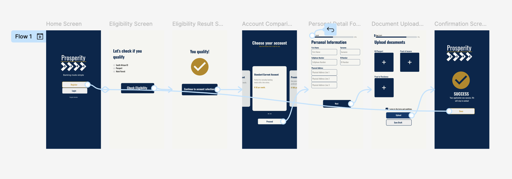

UX Design · Prosperity Bank
Mobile-first bank account setup for foreign nationals and first-time applicants
Overview
A mobile-first bank account setup experience designed for two underserved groups — first-time account holders and foreign nationals. The project covers the full UX process: secondary research, persona development, competitive analysis, wireframing, design system creation, high-fidelity UI, and two rounds of usability testing.
The Problem
Opening a bank account in South Africa requires visiting a branch. For millions of people — those in small towns without reliable transport, and foreign nationals navigating an unfamiliar system — that single requirement creates an insurmountable barrier.
But the barrier isn't just physical. Existing digital banking solutions assume users already know what they need. First-time applicants don't know which documents to bring. Foreign nationals don't know whether they even qualify. That uncertainty creates anxiety, and anxiety creates abandonment.
The goal was to design a mobile-first account setup experience that removes both barriers — the logistical and the psychological — by guiding users through every step with transparency, clarity, and a tone that builds confidence rather than confusion.
Understanding the Users
Secondary research and contextual analysis revealed two distinct user groups, each facing a completely different kind of barrier on the same journey.
Working hypothesis: Going into this project, the assumption was that branch accessibility was the primary blocker for both user groups — that if account opening worked entirely on mobile, the barrier would be solved. Secondary research and contextual analysis were used to test that assumption against real user behaviour and concerns.
Thandi Dlamini
24 · Recently employed admin assistant · Small town
Thandi's barrier is logistical. She has no reliable way to reach a physical branch, and she doesn't know what documents she needs before she even starts. Confusion at the research stage leads to hesitation and eventual abandonment — not because she can't open an account, but because the process never made her feel like she could.
Graça Machava
31 · Foreign professional · Living in South Africa
Graça's barrier is psychological. She is financially capable and tech-savvy — her problem is fear. She delays applying because she doesn't know whether she qualifies as a foreign national, and she'd rather not start a process she might be rejected from. No existing banking app addresses this directly.
Hypothesis vs. reality: The research disproved half of the original hypothesis. Branch accessibility was indeed a barrier for Thandi — but for Graça, it wasn't the barrier at all. Confusion around eligibility and document requirements turned out to be an equally significant, and in her case more significant, blocker. This shifted the design focus from navigation alone to guided onboarding with upfront transparency.
Pain Points
Accessibility
Many users in small towns have no reliable way to reach a physical branch due to distance and transport constraints. The entire account opening process needed to work completely from a phone.
Clarity
Users don't know what documents they need before starting the application. This causes drop-off before the process even begins — not at the hard parts, but at the very start.
Choice Overload
Too many account options with no plain-language guidance makes selection overwhelming, especially for foreign nationals who don't understand the South African banking landscape.
Fear of Rejection
Foreign nationals delay or avoid applying entirely due to anxiety about their documentation status. The design needed to address this psychologically, not just functionally.
Design Decisions
01
Users were abandoning the process before it started because they didn't know what they'd need. Rather than surfacing document requirements mid-application — where abandonment is costly — the redesign presents a clear checklist at the entry point. Users know exactly what to prepare before they commit to starting. This removes the most common reason for drop-off.
02
Graça's barrier wasn't navigational — it was emotional. She needed to know she qualified before investing time in an application. A simple eligibility filter, completed before the application begins, gives foreign nationals a clear signal that they can proceed. This directly addresses the psychological barrier that was causing avoidance behaviour.
03
Initial wireframes used a side-by-side column layout for account comparison. Usability testing revealed users were instinctively trying to swipe between options — they recognised the carousel pattern before it existed. That behavioural signal validated a redesign: one account at a time, with a peeking card on the right edge signalling that more options exist. This reduces cognitive load and mirrors how people naturally browse on mobile.
04
The home screen was originally designed with multiple entry points. Research showed that first-time users need clarity, not options. Reducing the home screen to a single primary CTA — with a secondary login option — eliminates decision fatigue at the most critical moment: first impression.
Accessibility
Colour Contrast
Primary Navy (#00274D) paired with Off-White (#F5F5F0) ensures text is readable for users with visual impairments, meeting WCAG contrast guidelines throughout.
Touch Targets
All interactive elements were designed at a minimum height of 48px to meet accessibility standards for users with motor difficulties, ensuring easy tapping on mobile devices.
Reduced Motion
Simple slide animations were used rather than complex motion, keeping the experience comfortable for users with vestibular disorders or motion sensitivity.
Usability Testing
Two rounds of usability testing were conducted using a low-fidelity prototype covering the full account opening flow: Welcome → Eligibility Check → Account Comparison → Personal Details → Document Upload → Confirmation.
Round 01
Users navigated the full account opening flow without confusion. The account comparison carousel was intuitively recognised — participants attempted to swipe between cards without being prompted, validating the design pattern before the interaction had even been explained.
Round 02
Users found the app easy to use and intuitive. One participant's response became the clearest measure of impact:
This response was given unprompted. The participant referenced ABSA — one of South Africa's largest banks — as a comparison point. For a concept project designed to serve users that existing banking apps have overlooked, this validated the core design approach.
Changes made after testing
High-Fidelity Prototype

Hi-fidelity screens covering the full account opening flow — from eligibility check through to confirmation.
Takeaways
Impact: Usability testing confirmed that both user groups — first-time account holders and foreign nationals — were able to complete the full account opening flow without confusion. The carousel redesign was validated by user behaviour before instructions were given, and the upfront document checklist removed the most common reason for pre-application drop-off.
What I learned: The most valuable insight from this project was that psychological barriers are as significant as logistical ones. Designing for Graça taught me that transparency and reassurance are UX decisions, not just copywriting ones. A simple eligibility confirmation screen does more for conversion than any visual design improvement.
Reflection
Designing solo across the full UX process deepened my understanding of how each phase informs the next. Building the design system before the hi-fi screens taught me the real value of systematic design thinking. Competitive research on ABSA directly shaped key design decisions, reinforcing that good UX is always informed by what already exists in the market.
Limitations: This project was conducted as part of the Google UX Design Certificate using fictional personas grounded in real user archetypes. The usability testing pool was small. A next iteration would benefit from testing with a more diverse participant group including older adults and users with limited prior banking experience.
Next Steps
Let's talk